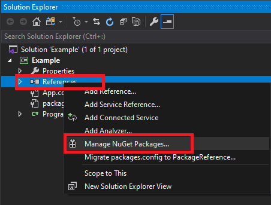
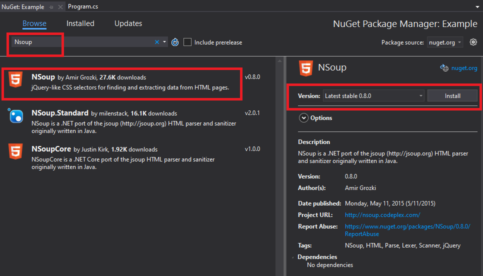
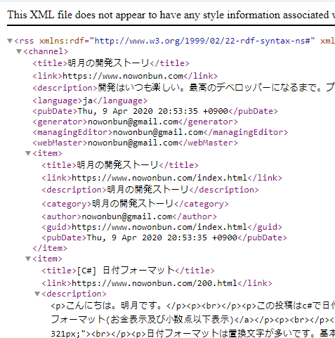
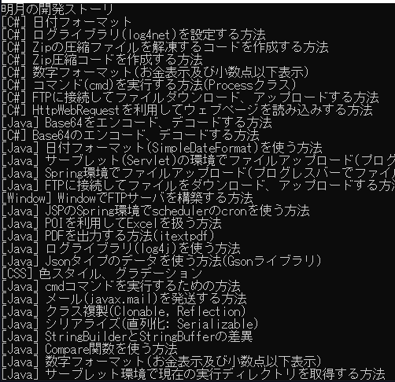
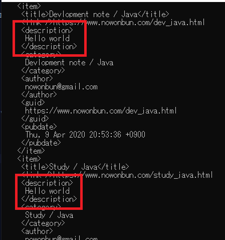

[C#] NSoupライブラリを利用してXMLとHTMLをパーシングする方法
こんにちは。明月です。
この投稿はC#でNSoupライブラリを利用してXMLとHTMLをパーシングする方法に関する説明です。
最近、プログラムを作成する時に環境設定ファイルとしてXMLを利用することがあります。以前はXPathを利用してXMLを探索して値を取得しましたが、JQueryのライブラリが登場してCssSelectorエンジン(Sizzle)の概念が生じ、classやidなどのアトリビュートで検索する方法ができました。
NSoupライブラリはXMLやHTML形式にあるファイルやデータをCssSelectorで探索するライブラリです。
個人的にXPathはXMLを探索する時にもっと明確に検索ができますが、Javascriptや様々でCssSelectorをよく使う今はCssSelectorタイプで探索するほうがもっとしやすくなったと思います。
Visual StudioでNSoupライブラリを使うためにNugetを利用してライブラリをダウンロード及び連結しましょう。


私のブログで検索エンジンに登録するようなRSSファイルがあります。

それをNSoupライブラリを利用してタイトルだけ取得します。
using System;
using System.IO;
// HttpWebRequestクラスを利用するため
using System.Net;
// NSoupライブラリ
using NSoup;
using NSoup.Nodes;
class Program
{
// ウェブページからHtmlファイルを取得するための関数。
public static string GetRequest(String url)
{
// HttpWebRequestでウェブサーバに接続する。
HttpWebRequest request = (HttpWebRequest)WebRequest.Create(url);
// 取得メソッドはGetだ。
request.Method = "GET";
// 接続する。
using (HttpWebResponse response = (HttpWebResponse)request.GetResponse())
{
// ストリームを取得する。
using (StreamReader reader = new StreamReader(response.GetResponseStream()))
{
// HtmlファイルをStringタイプに返却する。
return reader.ReadToEnd();
}
}
}
// 実行関数。
static void Main(string[] args)
{
// 私のブログのrssのURLに接続する。
var html = GetRequest("https://www.nowonbun.com/rss");
// html形式のStringをパーシングする。
Document doc = NSoupClient.Parse(html);
// item タグを取得する。
var element = doc.Select("item");
// elementは複数で取得するので繰り返してコンソールに出力する。
foreach (var ele in element)
{
// Titleのノードテキストを出力する。
Console.WriteLine(ele.Select("title").Text);
}
// css Selectみたいにitemタグの直下のdescriptionタグを検索する。
element = doc.Select("item > description");
// elementは複数で取得するので繰り返してデータを書き直す。
foreach (var ele in element)
{
ele.Text("Hello world");
}
// コンソールに出力する。
Console.WriteLine(doc.ToString());
Console.WriteLine("Press any key...");
Console.ReadKey();
}
}

上のxmlファイルを取得してitemのtitleタグのデータをコンソールに出力しました。 Jquryでelement探索することと同じ方法で探索が可能です。
NSoupの場合は探索だけではなく、書き直し機能もあります。
上のdescriptionのテキストを「Hello world」に書き直しました。そのあと、コンソールにxmlを出力しました。

descriptionの部分が「Hello world」になっています。
ここまでC#でNSoupライブラリを利用してXMLとHTMLをパーシングする方法に関する説明でした。
ご不明なところや間違いところがあればコメントしてください。
- [C#] Stringの補間式(interpolation)2020/04/27 20:39:57
- [C#] Newtonsoft.JSONライブラリを利用してJsonデータ構造を扱う方法2020/04/23 20:19:53
- [C#] EMailを送信する方法(System.Net.Mail)2020/04/22 19:00:42
- [C#] ini環境ファイルを使う方法2020/04/22 00:09:39
- [C#] 環境設定ファイルを扱う方法(System.Configuration)2020/04/20 19:37:57
- [C#] Reflectionを利用してクラス複製する方法2020/04/17 00:34:33
- [C#] XMLをXPathを利用してデータを取得する方法2020/04/16 00:47:17
- [C#] NSoupライブラリを利用してXMLとHTMLをパーシングする方法2020/04/14 19:34:15
- [C#] 日付フォーマット2020/04/09 20:53:20
- [C#] ログライブラリ(log4net)を設定する方法2020/04/08 13:04:22
- [C#] Zipの圧縮ファイルを解凍するコードを作成する方法2020/04/07 11:17:44
- [C#] Zip圧縮コードを作成する方法2020/04/06 14:56:13
- [C#] 数字フォーマット(お金表示及び小数点以下表示)2020/04/03 00:38:37
- [C#] コマンド(cmd)を実行する方法(Processクラス)2020/03/31 07:15:40
- [C#] FTPに接続してファイルダウンロード、アップロードする方法2020/03/27 19:20:14
- [Design pattern] 2-4. デコレーターパターン(Decorator pattern)2021/10/28 20:11:13
- [C#] 58. ウィンドウフォーム(Window form)を作成する方法、そしてウィンドウメッセージとキュー2021/10/27 20:35:44
- [Design pattern] 2-3. ブリッジパターン(Bridge pattern)2021/10/27 20:32:21
- [Design pattern] 2-2. コンポジットパターン(Composite pattern)2021/10/27 20:30:54
- [Design pattern] 2-1. アダプターパターン(Adapter pattern)2021/10/26 19:12:40
- [Project design] プログラム最終テスト - ST(System test(Standard, Scenario))2021/10/26 19:10:07
- [Project design] プログラム結合テスト - IT(Integration test)2021/10/25 20:12:17
- [Python] Seleniumライブラリを使う方法(自動ウェブテスト、ウェブスクレイピング)2021/10/25 19:29:00
- [Design pattern] 1-5. プロトタイプパターン(Prototype pattern)2021/10/22 19:35:45
- [Project design] プログラム検証とテスト - Unitテスト2021/10/22 19:34:09
- [C#] 57. コーティング規約2021/10/21 18:57:02
- [C#] 56. 値の初期化及び基本データ値(default)を設定する方法、そして原始データのnull処理、?と??の使い方2021/10/21 18:54:41
- [C#] 55.namespaceとusing、そしてpartialの使い方2021/10/21 18:51:39
- [C#] 54. Reflection機能を使い方 - Attribute2021/10/20 19:29:31
- [Project design] プログラム制作(コーディング) - クラス作成方法2021/10/20 19:28:09